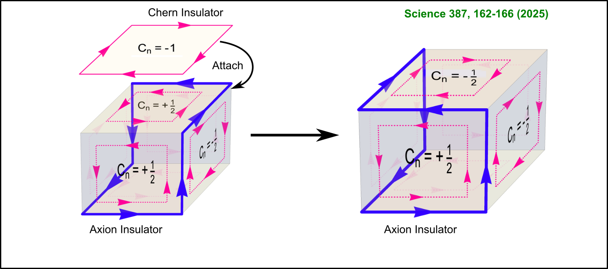
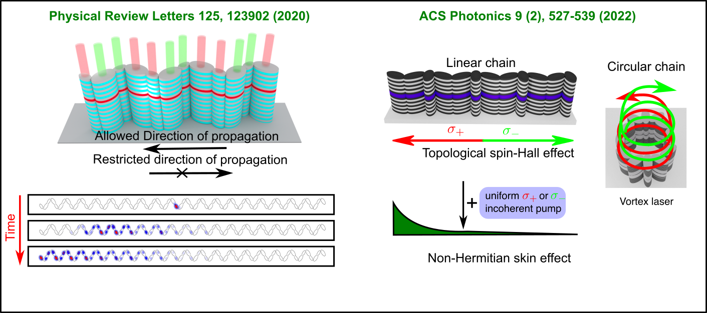
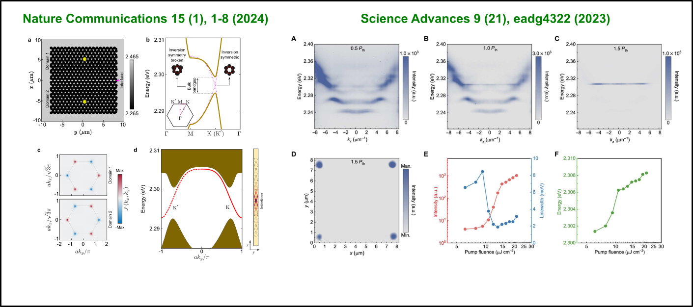
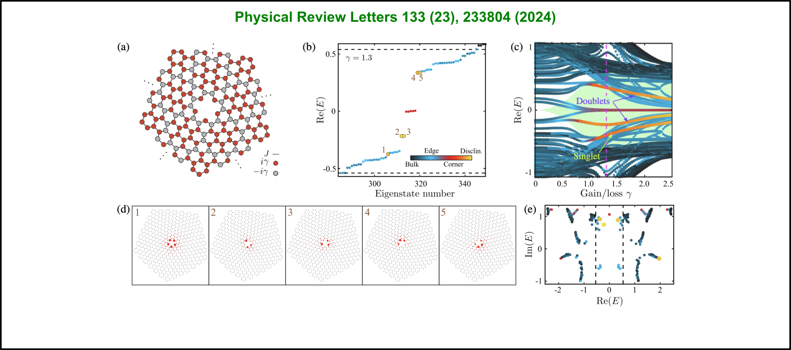
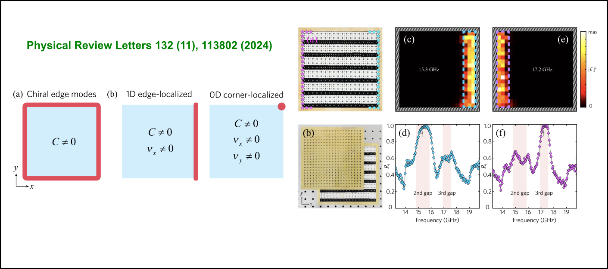
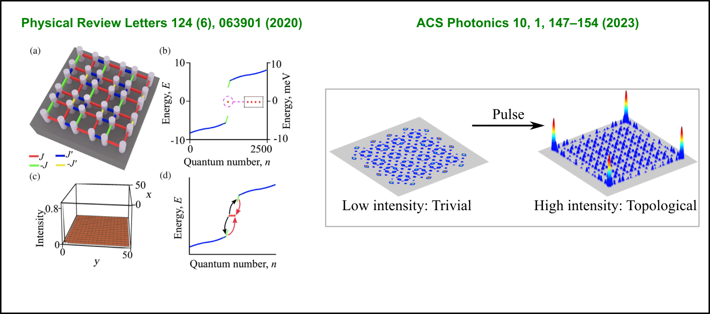

The first Photonic Axion Insulator: Science 387, 162-166 (2025).

Non-Hermitian Topological Exciton-Polaritons: Physical Review Letters 125, 123902 (2020); ACS Photonics 9 (2), 527-539 (2022).

Topological Exciton-Polaritons and Lasing: Nature Communications 15 (1), 1-8 (2024); Science Advances 9 (21), eadg4322 (2023).

Non-Hermitian Disclination Lattices: Physical Review Letters 133 (23), 233804 (2024).

Non-Hermitian Chern Photonic Crystals: Physical Review Letters 132 (11), 113802 (2024).
